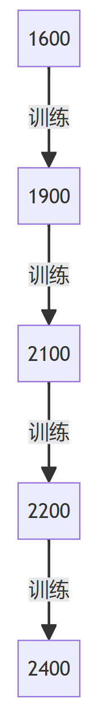
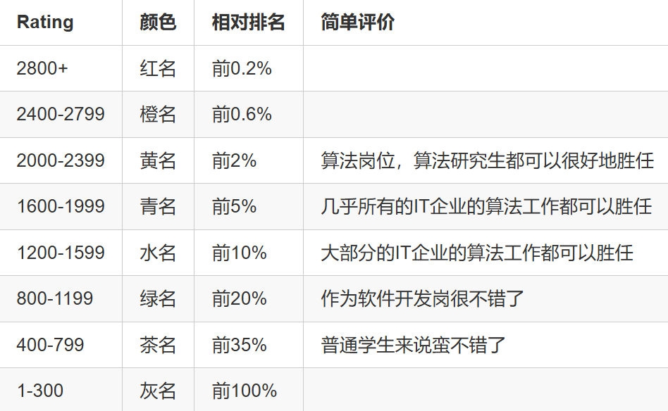
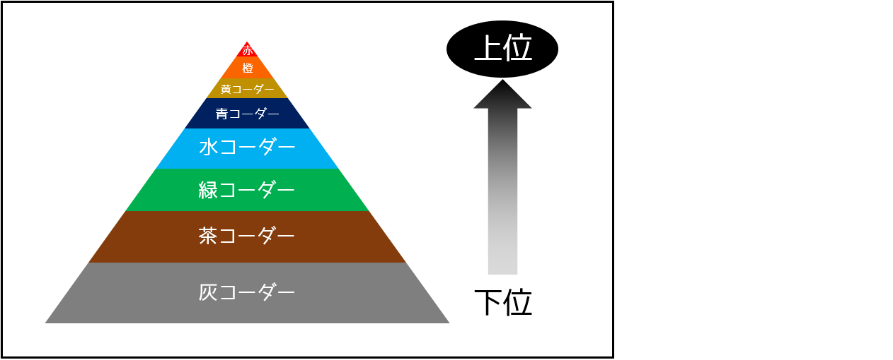

荔枝橙味CF糕守
本文汇总了CF如何上分的两篇博客
来源于2426
rating 1000-1400
到达青名（1400）需要做到三点。
- 能够快速写出模拟题（5到10分钟内）
- 能够快速写出暴力（5到10分钟内）
- 能够在脑子里或草稿纸上把问题分情况讨论（例如，N=2、N=3、N>=4）
举个例子，在Codeforces Round #556中，如果你可以做到以上三点，就可以很惊喜地在Div2中达到200名，这是一个很夸张的例子。但在Codeforces Round #554 (Div. 2)中，你只能达到3400名，rating1250及以下的参赛者可以上分。
平均来说，如果你可以做到以上三点，rating就可以达到1400。
[[如何训练]]
首先，建议打ABC；尽管CF上有很多好题，但如果你想更容易地练习编程，最好去刷AtCoder。
特别地，推荐做ABC中的B题和C题。做B题可以学到如何更快地写模拟和暴力，做C题可以学到如何想题、如何用草稿纸更快地想出解决方案。如果你切了所有的B题和C题，就会学到很多，变得更强。
可以借助AtCoder problems的帮助刷AtCoder，你能从这个网站知道自己做了哪些题。
当你刷AtCoder时，有几点很重要：
- 当你想不出解决方案时，应该在思考B题15分钟、思考C题30分钟后再看题解。可悲的是，最近几场ABC没有英文题解，但你可以读标程（题解中很可能包含标程的链接）。
- 即使你AC了某道题，在习惯快速写代码前，还是可以通过阅读大佬的源代码学到一些东西。所以建议看一些简单的源代码。
- 特别是当你做C题时，推荐你用草稿纸辅助思考。不用纸的话，用白板打草稿也可以。
rating 1400~1900
CF上人数最多的rating区间是[1400, 1500]。他们都很想上分，但从1500开始上分比较困难，很多人放弃了。但也有很多人坚持训练，成功上分。
要达到1900，需要下面的技巧：
掌握并能够使用以下主要算法：
- 暴力
- 动态规划
- 深度优先搜索
- 广度优先搜索
- 迪杰斯特拉
- 树状数组
- 排列数、组合数
- 乘法逆元
- 位掩码
- 二分查找
注意：一般而言在rating 1800前，线段树不是必须的。上紫以后才需要学的线段树。
提高手速（例如，R1100的题目5分钟写好，R1400的题目10分钟写好）。手速在CF很重要，因为一般来说，如果题目难度范围很大，手速会在很大程度上影响rating。
[[如何训练]]
如果你不擅长快速写代码、快速调试，就应该刷AtCoder。事实上，从统计学上讲，很多日本选手手速很快，但不擅长解决难题，觉得是AtCoder的锅。
推荐做ABC的C题和D题。平均来说，如果能在10分钟内解决C题，在20分钟内解决D题，你就是手速场中的Div1
如果你不擅长解难度高于R1400的题，就应该学一些上面提到的算法，做做CF上的板题。举个例子，如果你觉得自己不擅长DP，就刷CF上R1200到R1400的DP标签的题。让人惊讶的是，只有约50道难度小于等于R1400的DP标签的题。
有趣的是，板题都集中在只有Div2的那些比赛中。如果你不擅长只有Div2的比赛，那么很可能是你不擅长使用典型算法，尤其是上面提到的10种算法。
如果你能做板题，但不擅长做难度高于R1500的题，就要开始在TopCoder刷题。这类练习对擅长只有Div2的比赛但不擅长Div1+Div2一体的、分开的比赛的人十分有效。
有时候，尤其是在Div1+Div2的比赛中，一些题目需要数学概念或者思考。因为TopCoder上有很多题用到这些（另外还有简便的实现！），所以你应该刷TopCoder。
推荐刷最近100场SRM的Div1简单。但有些题真的太难了（甚至粉名都切不掉），所以刷之前，你应该看一下题目的通过率。你可以利用https://competitiveprogramming.info/来获取一些信息。
不幸的是，不知道有没有像AtCoder Problems那样，能够看自己在TopCoder SRM中做过哪些题的网站。所以，如果你想记录自己刷过那些题，应该做一个电子表格或者表格，例如：https://drive.google.com/file/d/1mSy9PM4Km8EVv8Lp4nhitorOe2HbAS1e/view?usp=sharing
当还是个蓝名时，数学思维也很糟糕。在切了50题Div1简单以后，在TopCoder成了蓝名，在CF成了紫名
如果你擅长切题，但在比赛中发挥不好，就应该多打虚拟赛。你知道CF的虚拟赛系统吗？你可以虚拟参赛！
rating 1900~2200
如果你想达到2200，首先，你应该是Div1，并且参加Div1的比赛。这意味着你应该刷很多难题（R1900或更高）
即使你手速快或者十分擅长切板题，打Div1比赛也是很难的。可悲的是，有很多选手在蓝名和紫名之间摇摆
要达到2200，需要以下技巧：
- 知道并且会用上面提到的10种算法，还要加个线段树（包括懒标记）
- 非常快的手速：R1100 5分钟，R1500 10分钟，R1800 15分钟，R2000 40分钟
- 相当好的数学思维和思考问题的能力
- 强大的思维，可以支持超过1小时的思考，即使在Div1比赛中途落后了也不放弃
[[如何训练]]
这只是的训练方式：在rating2000时打了很多虚拟比赛。在这里，虚拟比赛并不意味着“虚拟参与”，而是选择4到5道难度在自己rating附近的题目（举个例子，目前rating是2000，那么选择CF中R2000的题目），并且在2小时内切掉
你可以利用https://vjudge.net/。在这个网站，你可以从很多OJ上（AtCoder、CF、Hackerrank、Codechef、POJ……）拉题组一场虚拟赛
如果你在虚拟赛中不能切掉这些题，而且没有想出解决方案，就应该去谷歌查题解（举个例子，如果你想找Codeforces Round #556 (Div. 1)的题解，就去谷歌搜“Codeforces Round #556 editorial”）
在CF上分还有一件重要的事。为了更快的手速，你应该准备一些板子。例如，认为线段树板子、懒标记线段树板子、CRT的板子、FFT的板子、计算几何板子等等都是很有效的
rating 2200~2400
这是本博客关于训练技巧的最后一部分。事实上，卡在橙名很久了，就连在虚拟赛中平均表现也是橙名。这是因为之前的训练方法在橙名遇到了障碍
Rating 2200到2400事实上非常难——如果你平均表现2200，如果你练习赛打得更多，上粉（到2400）看上去也没那么难。但是平均表现2400比你想象的要难得多。如果你的rating正好是2400，那么在Div1的比赛上，你一般要打进前20%（例如，如果有525人参加，那么你应该最差在105名）才能上分
要达到2400，需要以下技巧：
- Rating达到2200
- 在Div1比赛中切掉AC少于100人的难题
如果你想切难题和用ad-hoc临时方法的题，根据TozanSoutherPacks在上一篇博客下的评论（http://codeforces.com/blog/entry/53341?#comment-373965），“要达到2600分乃至更高，你应该切Boss题，所有这些都是临时问题或者步骤很多的问题。”觉得那是对的，但是对来说，觉得即使你只想达到2400分，切步骤很多的临时问题也是有必要的。
[[如何训练]]
达到2400分最安全的方法是“切4000道题”。就在TopCoder、AtCoder、CF等OJ上切了超过4000题
事实上，有一个传说（或者说是事实）是，最NB的选手tourist在他这辈子切了一万多题
但是可能很多人觉得自己没时间。所以会给你一些更高效的途径
首先，AtCoder上有很多教育题。推荐你做ARC尤其是ARC058到ARC090的E题和F题（尤其是AtCoder中700到900点的题目）。尽管以前的ARC在“思维”和“模板”之间是平衡的，但可悲的是，认为AGC和最近的ARC实际上太偏向思维了，所以如果你的目标是在CF上分，不推荐它们（尽管如果你想达到2600乃至更高，还是要刷AGC）
对来说，实际上，刷了ARC以后，在CF虚拟赛的平均表现从2100提高到了2300（I could not reach 2400 because start was early）
如果你切不动题，推荐你放弃思考并且看题解的时间如下：
| AtCoder点值 | CF难度 | 思考时间 |
|---|---|---|
| 600 | R2000 | 40分钟 |
| 700 | R2200 | 50分钟 |
| 800 | R2400 | 60分钟 |
| 900 | R2600 | 70分钟 |
| 1000 | R2800 | 80分钟 |
如果你切了AtCoder上的教育题，你编程比赛的技能将会有所提高。但还有另一个问题，没有付诸实践，你没办法上分
所以，你应该至少在CF上打50场虚拟赛（尤其是Div1）。在虚拟赛中，你可以学到，紫名、橙名应该如何打比赛（比如比赛策略），以及如何在CF比赛中利用在AtCoder学到的技巧。强烈推荐在虚拟赛后看看所有题的题解，除了太难的题（比如在比赛中AC人数少于30的题）。还建议，在打完比赛看完题解后在笔记本上写一些对于比赛策略、教训和可以改进的地方的反思
此外，建议你每周一次，花点时间思考一些难题（比如CF上R2800的题）。如果你想了很久也想不出来，建议你去读题解，因为那样你可以学到很多。解决难题可能会给你一场上分100+的机会，也会给你更快解决简单题的机会
最后，猜这个方法对于超过30%的人奏效，因为用这个方法在CF上粉，square1001用这个方法在TopCoder上红。希望的方法可以产生新的粉名
训练心理
心理问题是选手中最常见的问题之一。即使对，直到最近两个月前，出于对一场掉分100+的恐惧，超过9个月没打过CF上rated的比赛。另外，还有几场比赛甚至都做不到看下一个题，因为做不出来更简单的题，心态崩了
最近发现一种锻炼心态的办法
- 制定一个比赛前的常规程序。这能让们在比赛期间集中注意力
- 事实上，就而言，的常规程序是在比赛快开始时看着倒计时减少到0。黑红大佬yutaka1999实际上在IOI开始前就在修禅
- 如果你比赛中没发挥好（比如20分钟内切不掉B题），不去看榜也是个好主意
- 还有一件重要的事：“比赛过程中不要管rating”
- 觉得，即使这场要掉分，下一场上分的可能性也提高了。这就是为什么在比赛过程中不管rating
- 不要过于在意之前犯过的错误。错误也是一次好的学习机会，每个人都会犯错。即使是tourist也曾经在AtCoder World Tour Finals上翻车
- 觉得吧，“rating”和“你犯过多少错、做过多少反思”之间存在关联
以上这些方法不仅在正式比赛中适用，还在虚拟赛中适用。注意：比赛中不要有太大的压力，开心就好

来源于2909
上级篇是针对想成为AtCoder黄名（2000+，对应CF2200+），以及橙名（2400，对应CF2522+）阶段的选手的进步指南

右边的评价来自于AtCoder的老版chokudai的博客

成为黄名选手的6个要求
为了在AtCoder里成为黄名，你需要达到2000分（CF2200分）
- 在AtCoder Beginner Contest里稳定切掉5题
- 在AtCoder Beginner Conetst里半数情况切掉6题
- 简单的问题（500分内）尽快解决
- 根据相关数据，A题1分内，B题2分内，C题5分内，D题10分内，E题20分内比较合理
- 理论上你最好在40分钟内切掉5题
- AGC之类对数学要求比较高的比赛里，最好能切掉2题
这是在竞赛里黄名选手的平均表现。为了保持这个表现，你需要做到以下6点。当然水色选手要做到的4点你也要做到（中级篇内容）
条件1
挑战程序设计竞赛（AKA蚁书）上面记载的大部分算法和数据结构都要理解。具体来说，需要了解以下23个算法和5个数据结构
中级篇2-1节里的12个算法和3个数据结构
1 | 枚举 二分搜索 深度优先搜索 广度优先搜索 |
中级篇没有提到但是挑战里写过的11个算法
1 | 离散化 分治 矩阵乘 |
中级篇没有提到但是挑战里写过的2个数据结构
1 | 树状数组 线段树与懒标记 |
条件2
条件1介绍的算法和数据结构，在各种比赛里学会使用，同时将本文介绍的算法和数据结构熟练掌握，变成自己的东西
条件3
有一定的数学能力
在AtCoder里，不仅仅考验你能否灵活使用各种算法的能力，也频繁出现了大量的数学问题（和中级篇2-3里95-100的问题一样），问题也越来越难和多样。因此，为了成为黄名选手，要多多做一些数学题
条件4
25行左右的程序，基本Bug Free写出来
60行左右的程序，基本很快地写出来，出了BUG也能在10分钟内解决
实际上，60行左右的程序，能够30分钟内写完并且de完bug，是大概率能AK掉ABC的
条件5
打字速度要快！经验来讲，1分钟要350个字符才够用
实际上，一些高排名选手里也有打字很慢的人（200个字符左右），但是想在ABC里拿到好成绩，打字速度实在太重要了
比如说AtCoder 148里，30分钟AK和40分钟AK，差距250以上的表现分
条件6
一般来说，AtCoder的过去的题目要做1000题以上
补充
以上的6个条件满足了的话，ABC的E问题基本难不倒你。F问题的话，如果是超过250人做出来的场次，你应该也能做出来才对
顺便一提，最近15场ABC（141~155），F问题做出来的超过250人的场次有7场。因此AK掉ABC的概率应该是3-5成
满足了6个条件，再练练数学能力，AGC的问题解决出来的概率应该会慢慢增加
总结
- 掌握11个全新的算法
- 学会2个新的数据结构
- 去解决TopCoder SRM的问题，锻炼数学能力
- 去解决JOI（日本信奥）的题目，锻炼能力
- 解决以前Contest的题目
- 多多VP找感觉
- 练打字速度
references:
https://www.acwing.com/blog/content/15042/
https://juejin.cn/post/7186915748395270201
https://www.luogu.com.cn/article/yx1u034q
.gif)
.gif)
.gif)
.gif)
.gif)
.gif)
.gif)
.gif)
.gif)
.gif)
.gif)